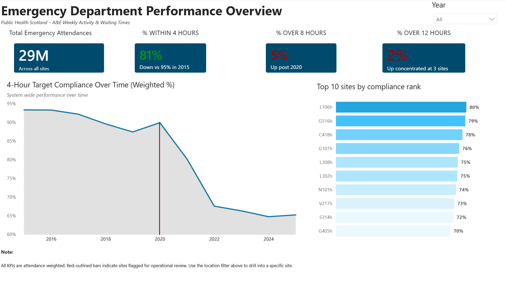
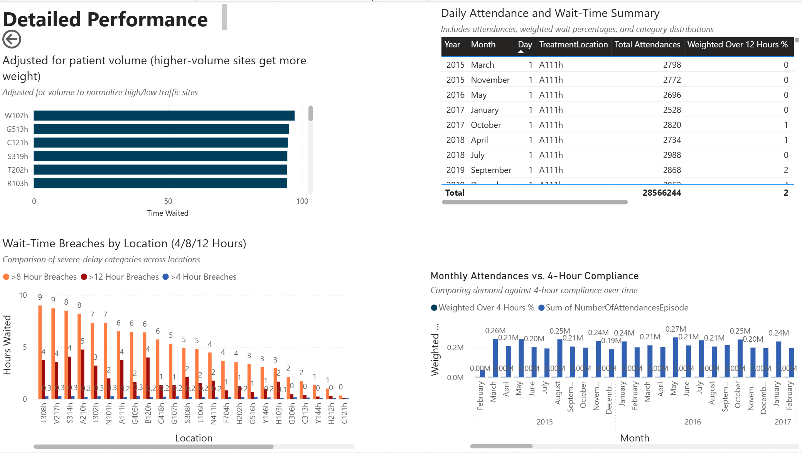
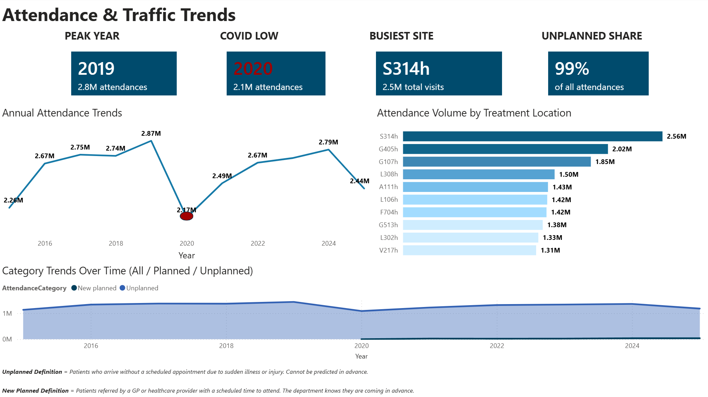

Emergency Department Analytics Dashboard
Tools: MySQL, Power BI
Downloads
This project analyzes weekly Emergency Department (A&E) performance using NHS Scotland data to evaluate compliance with national wait-time targets and understand how patient volume impacts operational outcomes.
The analysis focused on identifying trends in wait-time breaches, comparing performance across treatment locations, and evaluating how attendance levels influence system pressure. Data was cleaned and transformed in MySQL before being modeled and visualized in Power BI using weighted KPIs to ensure accurate representation of patient experience.The dashboard includes KPI tracking, drillthrough functionality, and interactive visual elements designed to make complex performance trends easier to understand.
Dashboard Screenshots



Key Insight & Findings
- Weighted compliance with the 4-hour target declined significantly over time
- Sharp drop observed post-2020, indicating increased system strain
- Recovery after this period was limited, suggesting sustained operational pressure
- Confirms that demand pressure is a primary driver of performance decline
-
Higher attendance periods correlate with:
- Increased wait-time breaches
- Lower 4-hour compliance rates
- Significant variation exists between treatment locations
- Some sites consistently outperform others, even under similar demand levels
-
Indicates potential differences in:
- Operational efficiency
- Staffing
- Capacity management
1. Decline in 4-Hour Target performance
2. Attendance Volume Drives Performance
3. Performance Varies Across Locations
4. Long Waits Concentrated in Specific Sites
- 8-hour and 12-hour breaches are not evenly distributed
- A small number of locations contribute disproportionately to severe delays
- These sites represent key targets for operational intervention
5. Weighted KPIs Reveal True Performance
- Using weighted metrics changed the interpretation of results
- High-volume sites had a larger impact on overall performance
- Prevented misleading conclusions that would occur with simple averages
Key Takeaways
- Patient volume is the strongest driver of wait-time performance
- Weighted KPIs are essential for accurate healthcare analytics
- System-wide performance masks significant location-level variation
- Targeted interventions should focus on high-volume, low-performing sites
- Post-2020 trends suggest long-term strain rather than temporary disruption